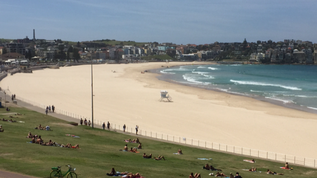
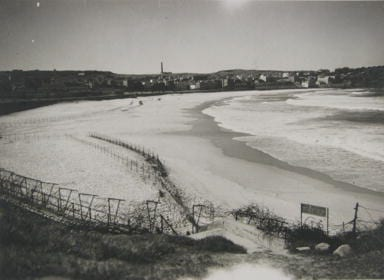
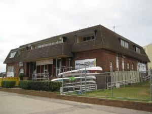
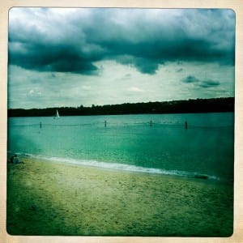
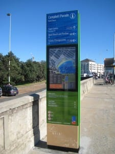
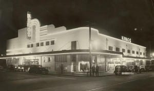

Well, I’ve found the courage and I’m in the saddle…writing this now…
It has indeed been close to 5 years, that’s FIVE years! since I’ve published a post here. I wrote a couple of draft posts in that time, but never published them.
I guess I had this long hiatus for more than one reason, and not the least of which is that Life has been extremely busy and demanding for me these past few years, to the extent that I deprived myself of sleep for a long time. So I had to leave some things aside and accept that I can’t always do everything I want, when I want. Sometimes you just have to surrender for a bit. Also, during the last five years, so many more changes and developments have been going on in Bondi, which I’ve found a little overwhelming, and just needed some time to process everything. I think I’ve processed enough for now. Which brings me to this post…
Sometimes, in order for someone to take action on something that they need to do, it takes for a crisis to happen, to motivate the action. Maybe this is what is going on for me right now (see, I’m still processing…)
We are in a crisis at the moment. ‘We’ being not just Bondi, not just Sydney or NSW or Australia, but the whole world. This COVID-19 / corona virus pandemic has been the biggest game changer that most of us have ever seen in our entire lives, and it has literally just very quickly descended upon our world and is causing a huge disruption in all facets of our everyday lives.
Yesterday was a beautiful sunny, 28degree Sunday afternoon in Bondi. Normally, the beach and Campbell Parade would have been packed. But not yesterday. The beach itself was completely empty. This is because about 24 hours prior, Bondi Beach was officially closed by the authorities. It is still closed and will remain closed indefinitely. This is the first time that an indefinite closure of the beach has been enforced since World War II. The closure was a reaction to the lack of adherence by beach goers, to the social distancing rules that the authorities set up, in order to curb the spread of the virus. The behaviour of some beach goers seemed to disregard this directive, and has potentially put many people’s lives at risk. Thus the decision was made to close access to the beach and water. This public health order gives NSW Police law enforcement powers. Breaching the closure could land you in jail for 6 months or an $11,000 fine. As our politicians keep saying, these are ”unprecedented times.”


Image supplied: Courtesy Waverley Library

The North Bondi Surf Life Saving Club as it was in June 2012
Now you don’t.

Post-demolition of the North Bondi Surf Life Saving Club, early September 2012
In May this year the North Bondi Surf Life Saving Club (SLSC) voted to replace the existing Clubhouse with a new building.
The word got around and signage went up…

The clean-out had begun, but funds were still needed for the new building
Then a few weeks ago, the iconic building, that has stood on the promenade for 77 years (where Ramsgate Avenue meets Campbell Parade), turned to rubble.
Like many other buildings that had always been part of the Bondi I knew, the old North Bondi Surf Club building was demolished and is no longer part of the Bondi landscape.
At a cost of several million dollars, the new Bondi Surf Club building will comprise four levels, including a dug out basement to store boats, skis and training equipment.
As stated in a flyer that the North Bondi SLSC circulated to gather support and donations for the new building…
“the design of the new Club aims to capture the gentle arc of the beach at Bondi. It will provide a modern, state of the art facility for volunteers who patrol the beach. It will become a symbol of the traditions of a truly great lifesaving club and will demonstrate the pursuit of excellence which lies at the heart of the club’s long tradition.”
Nothing lasts forever and urban development is well and truly now part of the “Bondi character” but it is understandable that the building that previously occupied the space where the North Bondi SLSC stood, was no longer sufficiently serving the needs of the Club nor it’s large membership.
When a family grows, it needs a bigger house and so the family often moves. But you can’t move the Clubhouse away from the beach, and so I guess that the most sensible alternative was to replace it with a building that would be more functional for the needs of the Club in 2012 and beyond.
This is what the site looked like yesterday…

The digging has begun...
I will miss seeing the old “Pizza Hut” building on the promenade at North Bondi. So it is with a sense of reluctant acceptance that I await to see the new Clubhouse erected on the ever changing Bondi Beach landscape.
These images of the previous two North Bondi Surf Live Saving Clubhouses and the upcoming future Clubhouse, are taken from the flyer that the North Bondi SLSC circulated earlier this year, to gather support and donations for the new building.

December 2011 was such an abysmal month of “summer” weather, so the blue skies and hot weather attracted a fair few people to the sand yesterday.
I also decided to head down with the family to meet some friends and celebrate the first day of 2012 on Bondi Beach.

Bondi Beach looking towards the north end, 1st January 2012
As expected, the beach was packed. What I noticed most was how many different accents and tourists were around us. It seemed like almost everyone I heard talking, spoke in a foreign accent. I guess this is not really surprising since this time of year is, after all, the peak tourist season.
Towards the late afternoon early evening, a guy holding a megaphone (a surf lifesaver I think), was being followed near the shore by a camera crew. Then we hear on the megaphone in a very strong Australian accent , something along the lines of….”there are about 9 rips in the water today and soon, at 7 o’clock, there will no longer be any lifesavers patrolling the beach”.
I’m not sure if this announcement was an intentional bit of heightened drama for the camera crew that were accompanying the lifesaver on the megaphone or whether the announcement was to caution the many tourists and visitors to the beach who may be unfamiliar with rips and with the fact that the beach isn’t patrolled by lifesavers 24-7. The funny thing is, that if the announcement was a serious cautionary message, it is quite possible that many of the people it needed to reach most may not have been able to understand it, since the megaphone was not all that clear and the lifesaver delivering the message had such a strong Australian accent, it must have been difficult for non-Australians to make out every word that he said.
Well here’s hoping that somehow, the message got through and the first day of the year ended happily for all those on Bondi Beach yesterday.
Happy New Year !!
]]>
Peaceful Bondi, August 2011
When I got to the North Bondi end, I spotted a few chookies doing a bit of training!

Roosters training at Nth Bondi, Aug 2011
Had to to tear myself away and head to work, but what a great way to start the day!
]]>
Surf Sho, the world's biggest aerial surf event @ Bondi Beach 13/3/11
The water was superb, and I felt really blessed to live in such a lovely place, to have such freedoms and social tolerance in our community. Especially with all the tragedy and sadness around our world today.
However, there’s been a feeling of emotional intensity in the last couple of weeks. Emotions have been running high for me and many others I know. Don’t know if there’s some metaphysical reason for this but in any case, I’ve been doing a lot of thinking about Bondi…the endless development that I see everywhere in my suburb, the turning of this suburb into a big tourist destination, the incessant changes to the buildings and businesses and the spiralling high cost of living here. I understand that Bondi has always been a tourist destination but it just seems to me that Waverley Council is concentrating its focus on the tourist and development dollar rather than looking after its residents.
Last week there was a story in the Daily Telegraph about how Waverley’s mayor is asking taxpayers to help maintain Bondi Beach. The comments posted against this story are worth a read!
I know that some people will see this as whingeing about Bondi. After all, I choose to live here. But I choose to live here because it is my home. It is where I grew up and where I want to raise my child. But what happens when you get pushed out of your home city or suburb because it becomes so unaffordable, so crowded and overly concerned with urban development, wealth and superficiality? You either leave, as many have done, to settle in other smaller and more affordable communities or you choose to stay. Well I have chosen to stay but lately I’ve been questioning this decision. How do you weigh up your emotional ties to a place versus the practical realities of life and the inevitability of change?
Then comes the news of yet another devastating natural disaster to hit our planet causing more tragedy for so many people – the earthquake and tsunami in Japan. And it makes me realise that I really have very little to complain about…except, like many others, learning how to cope with potential forced displacement, in a world going insane!
]]>
Nielsen Park - taken with my Hipstamatic iPhone app, 8/2/11
I was a bit surprised to find Nielsen so quiet today. Only a handful of people around and virtually no-one in the water. I got my goggles on and ventured in. The sky looked rather ominous and the water was quite cool at first. But then, after a few strokes… it felt delicious. I just felt so good swimming in there. To top it off, I never saw so many fish as I did this morning. There was a large school of them, stretching for something like 10 or 15 metres. Am not sure what kind of fish they were, but they were about 15-20cm long and pale-ish in colour.
Rain thereatened but held off. After I got out of the water the sun decided to come out for a bit and I lapped it up while I could… nothing like some sun and salt water therapy!
]]>There are times you can walk along the promenade in winter and feel a wonderful sense of space being in Bondi, like you are of out town somewhere. It reminds me of times past when there wasn’t a constant flow of backpackers and tourists.

winter’s day in Bondi, July 2010, view from South Bondi looking North
Last night I spent about an hour having a walk in the beach area.
Given it was a very cold night, there were very few people around.
This winter though, Bondi will be a bit busier than usual. Or at least, that is the intention…
From the 16th of July, until the 25th July, The Alpine Winter Festival is coming to Bondi Beach and bringing an ice-rink with it. As the Alpine Winter Festival website explains,
“The magnificent Bondi Beach Bergstation has been added as a third venue. What a spectacle it will be. The Alpine village will sit on the edge of Australia’s most famous beach and festival goers will enjoy the blue horizon from the ice or from the comfort of one of the cosy bars.”
Sounds like a nice little novelty idea to help businesses in Bondi during the winter period when the number of people who generally visit the area dies down. I’m sure the ice rink at the beach will entertain many a skater and “festival goer” and keep a bit of a buzz happening in Bondi during the winter.
I’m not certain if this Bondi Beach Bergstation is actually part of the Bondi Winter Magic Festival which made the front page of the Wentworth Courier three weeks ago. Not sure if they are the same festival or two separate events. Whatever the case, it’s clear that there’s a huge push to keep the Bondi economy ticking over when its not summertime.
I’m not really sure what I think about all this…on one hand this feels like yet another event that wants to keep Bondi on the map as the place where there’s always people and action, rather than just allowing her to have her usual little winter siesta from attention and entertainment. On the other hand, I appreciate that winter festival intiatives like this can help local Bondi businesses survive and cope with the quieter winter months, and that’s a good thing.
Sure, an ice-rink at Bondi in winter, with cosy bars sounds pretty cool (no pun intended) and could be fun but perhaps if Waverley Council also considered relaxing the onslaught of parking officers in Bondi during the winter time, businesses would benefit from people feeling that they could actually park their car in Bondi for an extended period of time and wander around.
I’m interested to see how successful the Bondi Beach Bergstation is and would love anyone who heads over to the Bondi ice rink this winter to write a comment here of their experiences and thoughts on the 2010 Winter Festival at Bondi.
]]>There were lots of people around – as there often is on Sunday morning – with Bondi markets etc. and Bondi was buzzing. But as I walked I really felt overwhelmed with all the development that is happening in Bondi.
I usually walk towards the promenade from the walk-bridge that is almost opposite where the Diggers once stood (now of course, apartments) – the bridge that leads to the side of the Bondi Surf Club. Now I’m pretty sure I’d walked there only a week ago or so ago, so sometime in the last week or so an incredibly ugly tourist signpost has sprouted from the pavement beside the bridge. I suspect that Waverley Council would probably think otherwise, but it really annoys me. It is ugly and I believe very unnecessary.
Bondi Beach is not a very big area actually. And all this signposting and touristifying is turning Bondi into a big monopoly board. Surely tourists don’t need to be told that if they look over yonder or walk about 2 minutes ahead they’re going to hit the Bondi “Town Centre!” I know, we have to consider that all-important tourist dollar ,but I think signposts like this are an eyesore and I just don’t see how this adds real value to the Bondi landscape. Given that we live in an age where the internet and information is literally at our fingertips I do wonder why a decision was made to put this thing up.


all for the tourist dollar…and how necessary is this information here, really??
I realise that ranting about this tourist signpost might seem relatively insignificant but it’s just that when you look further up the road and you see the Bondi Hotel contruction site and the rest, it all gets a bit too much!
So late last night I decided to have flick through the latest Wentworth Courier (local newspaper) only to see that in the property section another gorgeous 1930s art deco building (combining retail and residential) is up for sale, in my local neighbourhood. Here we go again…
]]>In the Bondi area alone (including Bondi Junction), there were at least half a dozen picture theatres in operation around the 1920s, 1930s.
There were also picture theatres in neighbouring suburbs like Rose Bay and Randwick. When the Wintergarden Theatre in Rose Bay went into the hands of developers I remember feeling quite disappointed at the defeat that locals faced regarding the planned demolition of the theatre. The bulldozers came in 1987. Down went the Wintergarden and up came apartments.
There was a cinema on the corner of Hall St, O’Brien St and Glenayr Avenue and there was also the Kings Cinema at Bondi Beach, corner of Roscoe St (where I once lived) and Campbell Parade. This image of the Kings Cinema, is reproduced here with kind permission of The Mitchell Library, State Library NSW.


THEN -Kings Cinema, Corner of Campbell Parade & Roscoe Street, Bondi Beach, circa 1930s
By 1970, most of these cinemas had closed, though there were still two or three operating in Bondi Junction. I’m not sure why the cinemas closed but I suspect it may have had something to do with the advent of television and perhaps offers from developers which,at the time, were maybe too reasonable to refuse.
I can remember going to see Mary Poppins in the Metro cinema in Bondi Junction as a very young child and as a young adolescent, I remember seeing a couple of flicks at the Star Cinema, also in Bondi Junction which closed in the mid-late 1970s.
I do remember the building which was formerly the King’s Cinema at Bondi Beach but by the time I was a young girl, this cinema was no longer in operation. However at one point in the late 1970s it was used to house The Creole Disco. Of course this site (and gorgeous art deco building) was bulldozed in the ealry 1980s to make way for what else – an apartment block known as The Breakers!

NOW - The Breakers, corner of Campbell Parade and Roscoe Street, Bondi Beach
Of course today Bondi has the wonderful Westfield mulitplex, pulp cinema, to replace the old picture theatres which clearly were a “waste of space” in some people’s eyes, or prime real estate that could be capitlised upon. So now, when we want an out of home community-based screen experience, the only cinema that Bondi has to offer (apart from the seasonal outdoor film events) is the mulitplex (Event) cinema in Bondi Junction – convenient for the “drive, park and eat” lifestyle which characterises so many of our lives today. And when we get that parking spot, chow down on some food from the food hall and then collect the tickets that we’d pre-booked online, we go and lap up a flick in a cinema without character, and without cultural history.
Does anyone remember going to any of the old picture theatres in the Bondi area? or does anyone have a story to tell about any of the old cinemas? or perhaps have any photos of these now long gone buildings?
]]>
Last year The Bondi Tram Disco part of the Bondi Hotel, and the Gould Street drive-through bottlo vanished when the bulldozers came in to make way for yet another development at Bondi Beach. Known as The Beach House this new 5-storey development will comprise residential apartments and retail spaces. Waverley Councillor Mayor Sally Betts has been quoted as saying that this development is a win for residents since it removes entertainment areas and thus “some of the antisocial behaviour that was coming from the Hotel in the past.” She’s glad that the Bombora Bar and Bondi Tram Disco have gone.
Here are a couple of video clips that I shot in Spring 2009…
This first clip shows the destruction of the site from Campbell Parade where the Bondi Tram Disco used to be.
This second clip shows the demolition from Gould Street where the Bottle Shop used to be.
Now don’t get me wrong…I didn’t have any great attachment nor fondness for the Bondi Tram Disco nor the Bombora Bar and I’ve never exactly been a regular at the Bondi Hotel, but these entertainment areas of the Bondi Hotel, as grungy and maybe even as antisocial as they were, formed an integral part of Bondi’s character. I am really just questioning how (yet another) block of five-star Bondi beach pads and a retail arcade adds any cultural value to a Bondi that’s been steadily stripped of it’s culture and character??
This obsession with taking the grunge out of Bondi over the last 20 years or so ticks me off since for me, part of Bondi’s attraction was it’s seedy or grungy aspect. Of course I’m not oblivious to the huge economic incentive behind these developments in Bondi but at what cost?
I’m just a bit over the whole beautification, trendification and commercialisation of Bondi (and of the beachfront strip in particular) that I’ve witnessed going on here over the years. I know I’ll be criticised for being a raving, leftie, greenie by some for having this opinion. I have a number of friends who own businesses in Bondi or who are Bondi residents and who I know love the endless development and trendification of Bondi. I suspect this is primarily because of the financial benefits that this brings them, but the development and over-development of Bondi is significantly changing the essential character of Bondi into something else. Maybe this subject needs to be reserved for another post, but can we please just give the development in Bondi a little bit of a break?
Does anyone else feel the same?
If you want to read more about the Bondi Hotel development, (and the developers and mega bucks behind it), check out the stories Bondi Hotel to get Overhaul, , The Beach House and Bondi Hotels get $100m Facelift.
For a different kind of read, check out some of Adam Gibson’s poetry about Bondi on this site.
]]>